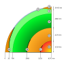

core-mantle-boundary

Definition: The core–mantle boundary (CMB) of Earth lies between the planet's silicate mantle and its liquid iron-nickel outer core. This boundary is located at approximately 2,891 km (1,796 miles) depth beneath Earth's surface. The boundary is observed via the discontinuity in seismic wave velocities at that depth due to the differences between the acoustic impedances of the solid mantle and the molten outer core. P-wave velocities are much slower in the outer core than in the deep mantle while S-waves do not exist at all in the liquid portion of the core. Recent evidence suggests a distinct boundary layer directly above the CMB possibly made of a novel phase of the basic perovskite mineralogy of the deep mantle named post-perovskite. Seismic tomography studies have shown significant irregularities within the boundary zone and appear to be dominated by the African and Pacific Large Low-Shear-Velocity Provinces (LLSVP).The uppermost section of the outer core is thought to be about 500–1,800 K hotter than the overlying mantle, creating a thermal boundary layer. The boundary is thought to harbor topography, much like Earth's surface, that is supported by solid-state convection within the overlying mantle. Variations in the thermal properties of the core-mantle boundary may affect how the outer core's iron-rich fluids flow, which are ultimately responsible for Earth's magnetic field.
Source: Wikipedia
Wikipedia Page (Something wrong with this association? Let us know.)
Wikidata Page (Something wrong with this association? Let us know.)
Occurs in: